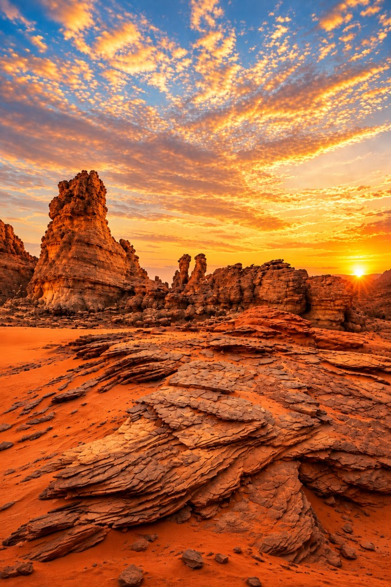
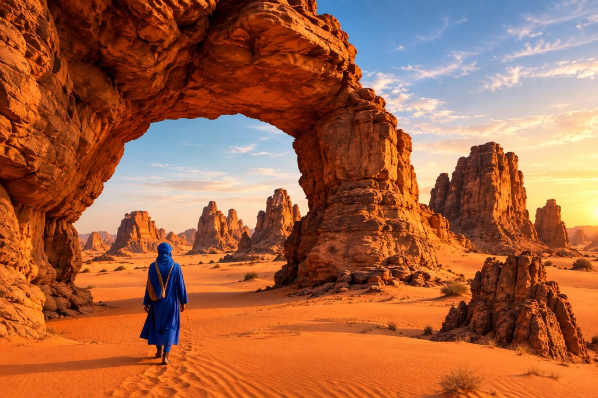
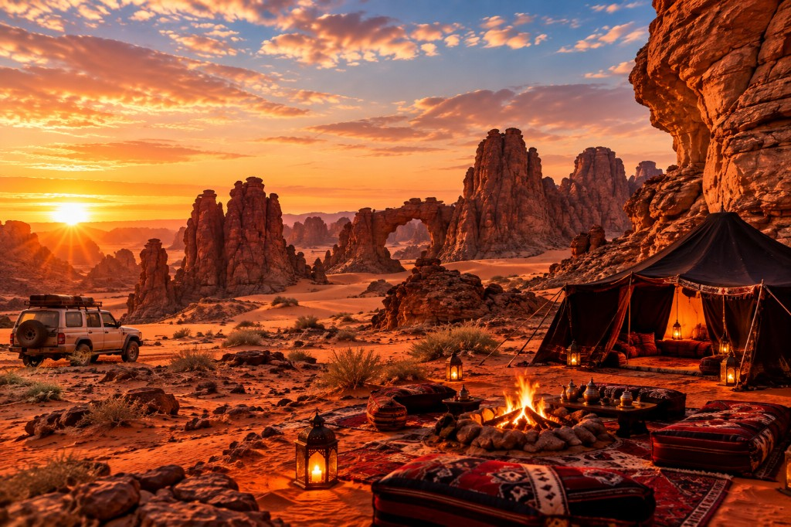
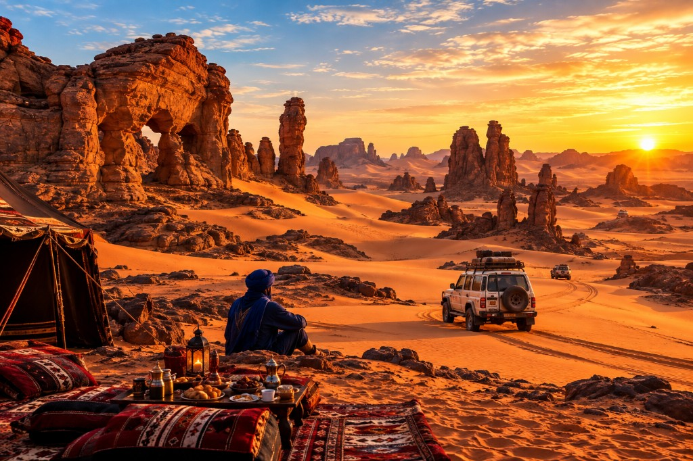
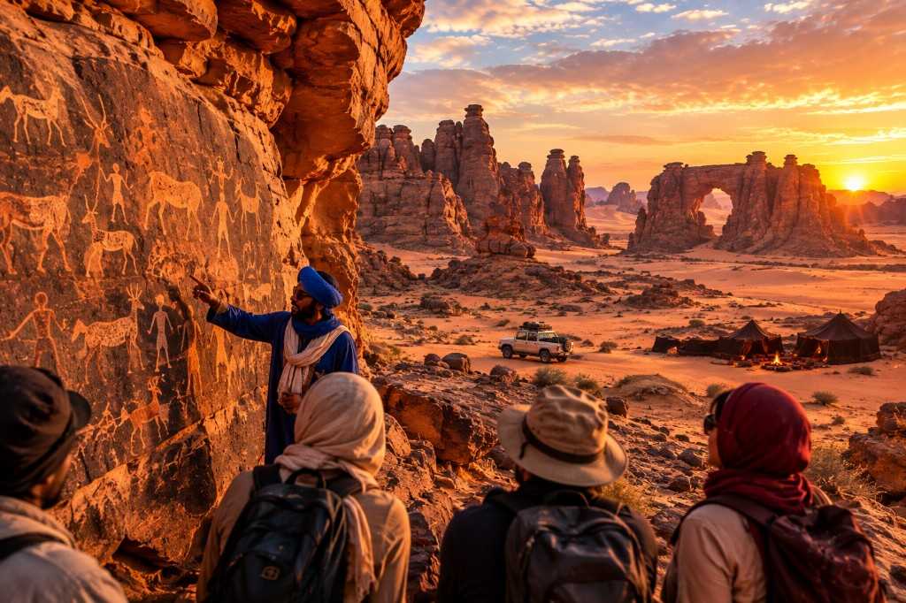
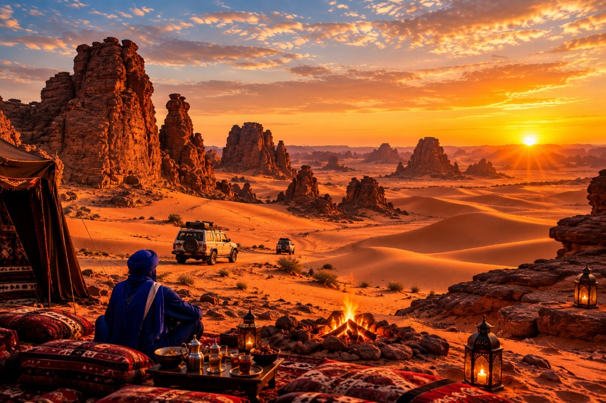

ALGERIA TRAVEL
CIRCUIT TADRART ROUGE • DJANET

94 990 DApar personne • vols Alger – Djanet – Alger inclus
Une immersion au cœur du Sahara algérien

UN VOYAGE ENTRE NATURE, CULTURE ET GRANDS ESPACES
Paysages sculptés par l’érosion, canyons, arches, dunes et sites d’art rupestre,
accompagnés par des guides locaux expérimentés.
DATES17 → 24 DÉC. 2026
DURÉE6 JOURS • 6 NUITS
TRANSPORTVOL + 4×4
FORMULEPENSION COMPLÈTE
4×4 & VOL
Alger – Djanet – Alger
+ déplacements en 4×4
BIVOUAC / LODGE
Hébergement selon
la formule choisie
GUIDES LOCAUX
Accompagnement par
des guides expérimentés
ALGERIA TRAVEL • TADRART ROUGE • DJANET2

JOUR 1 17 décembre • Alger → DjanetArrivée et première immersion saharienne
AU PROGRAMME- Accueil à Alger et départ vers Djanet.
- Accueil par l’équipe locale à l’arrivée.
- Présentation du circuit, des 4×4 et des consignes.
- Première découverte des paysages autour de Djanet.
- Coucher du soleil, dîner et installation pour la nuit.
NUITBivouac / hébergement selon l’organisation.
ALGERIA TRAVEL • TADRART ROUGE • DJANET3

JOUR 2 18 décembre • Djanet → Tadrart RougeEntrée dans le grand décor de la Tadrart
AU PROGRAMME- Petit-déjeuner puis départ en 4×4 vers la Tadrart Rouge.
- Traversée des plateaux et formations rocheuses du Grand Sud.
- Découverte des arches, canyons et paysages sculptés par l’érosion.
- Déjeuner préparé sur place.
- Installation du bivouac et soirée autour du feu.
NUITBivouac dans la Tadrart Rouge.
ALGERIA TRAVEL • TADRART ROUGE • DJANET4

JOUR 3 19 décembre • Exploration de la TadrartDunes, roches et grands espaces
AU PROGRAMME- Réveil au cœur du désert et petit-déjeuner.
- Exploration des dunes et formations rocheuses en 4×4.
- Arrêts photos et découverte des sites naturels.
- Déjeuner au cours de l’excursion.
- Retour au camp, dîner et soirée sous les étoiles.
NUITBivouac.
ALGERIA TRAVEL • TADRART ROUGE • DJANET5

JOUR 4 20 décembre • Sites naturels & art rupestreSur les traces des anciens habitants du Sahara
AU PROGRAMME- Départ après le petit-déjeuner.
- Découverte de secteurs d’art rupestre et de gravures anciennes.
- Visite accompagnée par un guide local.
- Continuation vers de nouveaux panoramas de la Tadrart.
- Dîner et soirée conviviale au bivouac.
NUITBivouac.
ALGERIA TRAVEL • TADRART ROUGE • DJANET6

JOUR 5 21 décembre • Dunes & coucher de soleilUne journée entre sable et roche
AU PROGRAMME- Départ en 4×4 après le petit-déjeuner.
- Exploration des zones dunaires et reliefs rouges.
- Temps pour photographier les paysages.
- Déjeuner préparé par l’équipe.
- Moment privilégié au coucher du soleil.
- Dîner traditionnel et soirée au camp.
NUITBivouac.
ALGERIA TRAVEL • TADRART ROUGE • DJANET7
 JOUR 6
22 décembre • Tadrart → Djanet
JOUR 6
22 décembre • Tadrart → Djanet
Retour progressif vers Djanet
AU PROGRAMME- Petit-déjeuner et démontage du bivouac.
- Dernière traversée des paysages de la Tadrart.
- Arrêts photos selon le temps et les conditions.
- Déjeuner puis retour vers Djanet.
- Temps de repos et découverte des environs selon l’organisation.
- Dîner et nuit à Djanet.
NUITHébergement à Djanet / selon formule.
ALGERIA TRAVEL • TADRART ROUGE • DJANET8
Prestations & conseils
Tout ce qu’il faut savoir avant de partir.
COMPRIS DANS LE CIRCUIT
- Billets d’avion : Alger – Djanet – Alger.
- Transport en 4×4 pendant le séjour.
- Hébergement en bivouac ou lodge, selon la formule.
- Pension complète avec cuisine locale préparée sur place.
- Accompagnement par des guides locaux expérimentés.
- Découverte de sites naturels, culturels et historiques.
À PRÉVOIR
- Vêtements adaptés aux écarts de température.
- Chaussures fermées.
- Lunettes de soleil.
- Protection solaire.
- Gourde.
- Documents de voyage.
RÉSERVATION
94 990 DA / personne
Places limitées — contactez-nous pour les disponibilités et les modalités.
WhatsApp : 0033 6 19 50 17 08 • algeriatravel.org
VIVEZ UNE EXPÉRIENCE UNIQUE
au cœur de la Tadrart Rouge, entre sable, roche et ciel étoilé.
ALGERIA TRAVEL • TADRART ROUGE • DJANET9